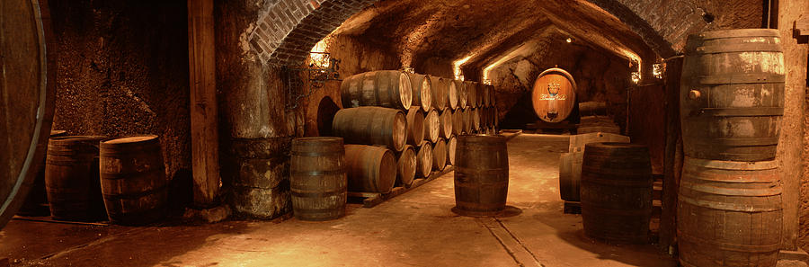

Ti trovi in: Home >> Chi Siamo
Siamo tre studenti universitari con la passione per i vini e volevamo fare qualcosa che rendesse possibile la ricerca in modo più agevole delle cantine, perchè a volte sono nascoste o poco rintracciabili e questo succede non solo nel territorio veneto al quale apparteniamo. Lo scopo dunque è dare spazio a tutte le cantine, da quelle più piccole e meno note a quelle più grandi e già rinomate, di essere conosciute e che facciano sapere quali sono i tipi di vino che producono e vendono. Possono andare dal rosso al bianco frizzante, ancora dal bianco dolce al rosato, così che qualsiasi cittadino dell’italia in qualunque posto si trovi possa sapere con esattezza dove sia la cantina più vicina a lui che vende un determinato tipo di vino oppure anche senza ricercare un preciso vino ma una categoria, perché pensiamo sia un privilegio degustare vini di ottima qualità che il nostro Paese ci dona.
In questo caso parliamo agli utenti che visitano il sito. Iscriversi permette di poter dare delle recensioni alle cantine in cui sono stati che sono molto importanti per chi come loro svolgono un lavoro rivolto ad un vasto pubblico. Il sito è comunque visualizzabile nella sua interezza per chiunque voglia soltanto conoscere quello che facciamo e dare un'occhiata a quali possono essere gli eventi che si svolgono nelle varie cantine.
Iscriversi al nostro sito è facile basteranno pochi passi e questo permette alle Cantine, in questo caso, di farsi notare e conoscere di più. Ad ogni iscritto mettiamo a disposizione un proprio spazio dove poter inserire nuove informazioni sulla propria scheda e in caso modificare quelle che in principio dovrete dare per una corretta iscrizione al sito, quali i contatti, un proprio sito web, una descrizione, un orario di apertura e chiusura. Si potrà inoltre pruomuovere eventi nella propria cantina e farli conoscere a chiunque visiti il sito inserendo le informazioni principali in un apposito form, il tutto verrà poi pubblicato nella nostra pagina dedicata a tutti gli eventi, questo per farsi un'idea di cosa parla l'evento. Ovviamente sarà possibile anche visualizzare le recensioni dei clienti e, qual si voglia, rispondere. Nel qual caso l’azienda non riesca a modificare la propria scheda potrà informare noi Amministratori via e-mail e darci l’autorizzazione ad apportare le modifiche specificate.


Per contattarci inviate una mail a: info@dailywine.it.
Daily Wine - All rights reserved